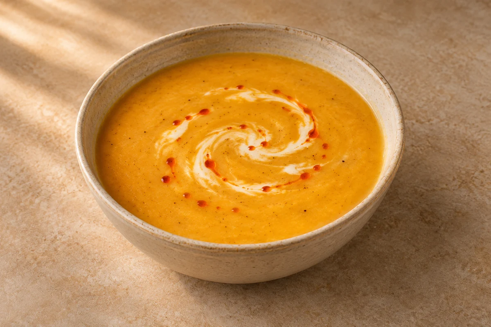

Soups
Spiced Parsnip Soup
A smooth parsnip and carrot soup with garam masala, paprika and a swirl of cream and chilli oil. Defaults to 2 servings; the full recipe serves 4.
Prep10 mins
Cook30 mins
people
Ingredient quantities update automatically

Ingredients
Method
Soften the onion and celery
Heat 0.5 tbsp olive oil in a large saucepan over a medium heat. Add the chopped onion and celery and fry for 5 minutes until softened.Add the root vegetables
Add the chopped carrots and parsnips. Cook for 10 minutes, stirring regularly, until starting to soften.Add the spices
Stir in the garam masala and paprika, then season with salt and pepper.Simmer
Pour in 500 ml vegetable stock and bring to the boil. Reduce the heat and simmer for 15 minutes, until the vegetables are tender.Blend
Remove from the heat and blend with a stick blender until smooth.Finish and serve
Ladle into bowls and swirl in 0.5 tsp double cream in total for the selected servings. Finish with a drizzle of chilli oil.